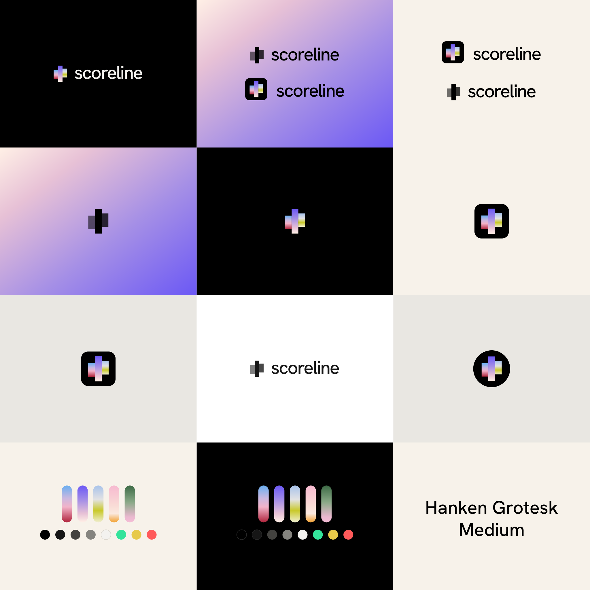
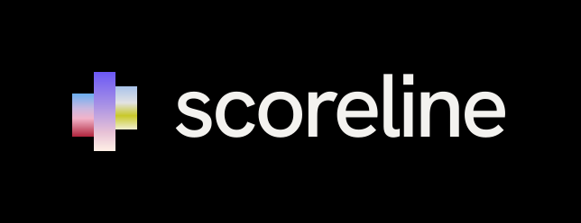

← Scoreline case study
Brand
Scoreline
The mark, the lockups, the icon, the colors and the type.

Mark
scoreline-mark.svg
App icon
scoreline-icon.svg

Lockup, on black
scoreline-lockup-dark.svg
Lockup, one color
scoreline-lockup-black.svg
Brand sheet
scoreline-branding.svg